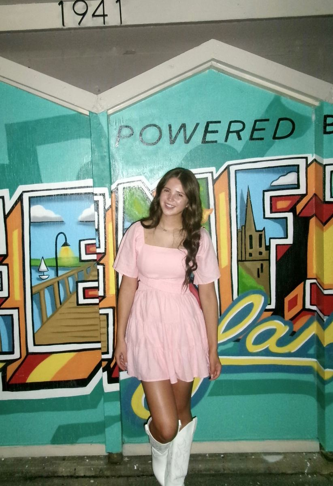
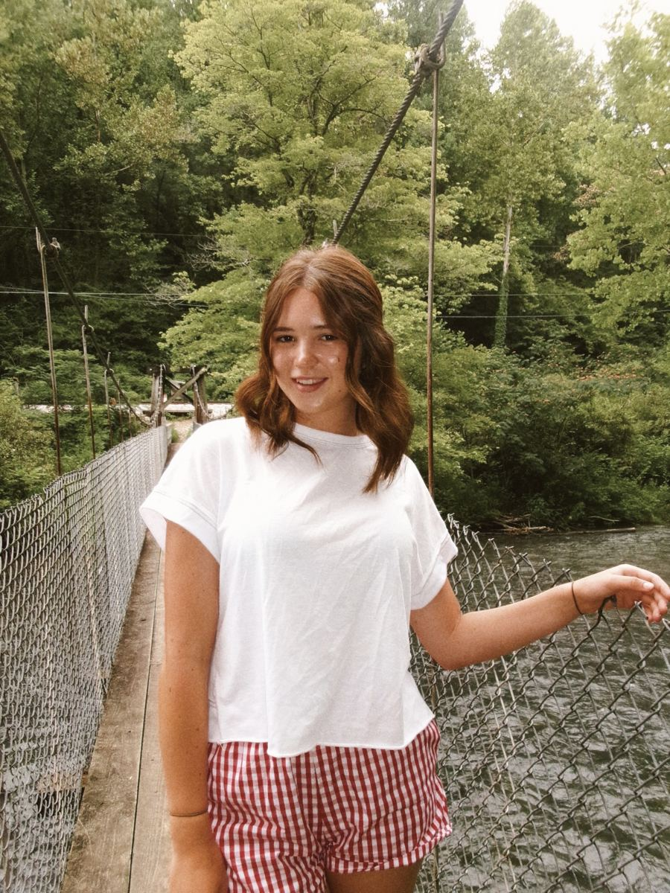

Hi, I’m Jessie.
I’m a junior at Northside High School in Jacksonville, North Carolina, and the Class of 2028 valedictorian.
I had an amazing older brother who was his class valedictorian, and he guided me into club after club. I realized most people around me never had someone like that. By my sophomore year our clubs were dying out, and I couldn’t revive them on my own, so I started a group for incoming freshman girls. It worked, and my junior year I expanded it to freshman and sophomore girls. That group became Monarch Mavens.
I also started Northside’s first Mock Trial team, and I founded Monarch Mentoras, where I use my Spanish to help ESL students get involved, try out for sports, apply for scholarships and plan for life after high school. Outside of class I do research, swim, play soccer and tennis, and represent Region 2 student-athletes at the state level.
“Shoot for the moon. Even if you miss, you’ll land among the stars.” That’s the line I live by.
Academics & Honors
- Class of 2028 Valedictorian · ranked 1 of 236
- 4.0 unweighted GPA
- AP Scholar (9th, 10th)
- Top Ten GPA award (9th, 10th)
- Highest class average in AP World History, AP Art History, AP Statistics, AP U.S. History and AP Computer Science Principles
- Top 3, American Mathematics Competition school contest
- HOBY Leadership representative (10th)
- Odyssey of the Mind state qualifier (9th, 10th)
Leadership
- Founder & President, Monarch Mavens
- Founder, Monarch Mentoras
- Captain & founder, Northside’s first Mock Trial team
- NCHSAA Student-Athlete Advisory Council, Region 2 representative
- Vice President, SkillsUSA · 3rd place, regional spelling
- Secretary, Student 2 Student (member 9th–11th)
- Student Council Secretary (10th)
- Mu Alpha Theta underclassmen representative
Research
- Junior Science & Humanities Symposium presenter (9th–11th): solar panel efficiency, monocrystalline vs. polycrystalline; sociocultural patterns in fan communities
- SNCURCS Undergraduate Research Symposium presenter (11th): CO₂ outgassing in Appalachian streams
- NCSSM Summer Ventures at Appalachian State University
Athletics & Activities
- Swim team captain (11th) · Varsity swim (9th–11th)
- Soccer (9th–11th) · Tennis (11th)
- JV Volleyball captain (10th)
- Science Olympiad (9th–11th)
- National Science Honor Society · National English Honor Society